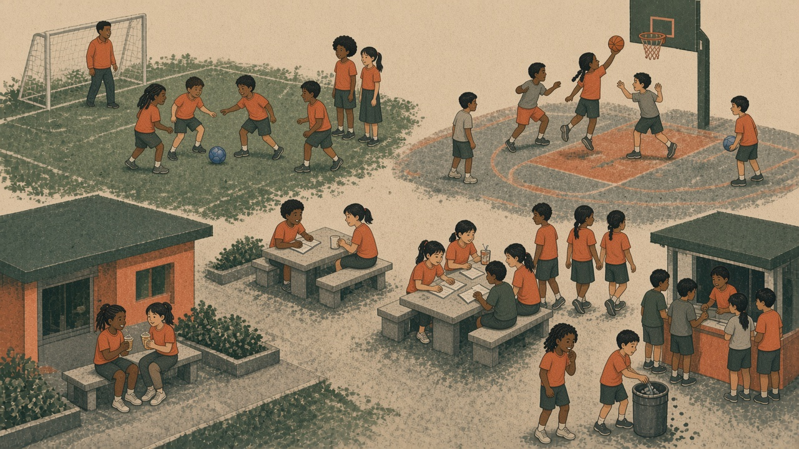
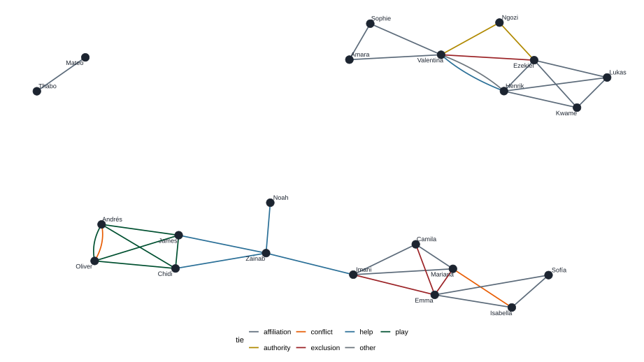
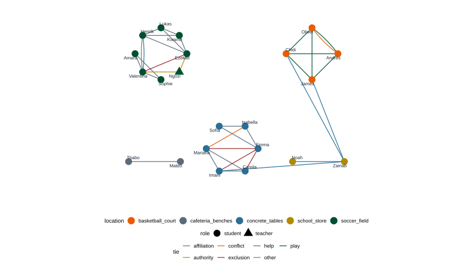

Structured extraction with LLMs
Turn one ethnographic observation into a network using schema-guided
LLM outputs in R.
ellmerIt is that you can do a lot with these tools,
as long as you stay inside the scientific method.
Reproducible steps when we can re-run the work,
and transparent methods when we cannot.
That is not the issue.
The question is whether you keep making the work:
traceable steps, visible procedures, and you in the creative loop.
Same model as a chat UI. The difference is that this lives in a file.
Models optimize for plausible language.
Xie et al. (2026, PNAS): even statistically realistic LLM data
may not be true.
https://doi.org/10.1073/pnas.2538145123
Outputs are material that still has to enter the method.
Before we send any text.
Privacy
Who is allowed to see the data?
Security
Who can steal, hijack, or break the system?
Privacy rules keep protected text off the wire.
They do not stop a model from being fooled.
Once identifiable notes are on hop 2 or 3, you cannot pull them back.
OpenAI, Anthropic, Google: untrusted third parties
unless your institution has a written agreement.
Treat sending text as handing it over.
Your campus rules still decide what may leave the machine.
API keys are like passwords.
Anyone who has it can spend the account’s credit and call the API as you.
Never
api_key = "sk-..." in codeToday: ~/.Renviron
One line on your laptop. Restart R after you save.
Later: keyring
OS keychain. Stronger than a text file.
Add one line, no quotes, no spaces around =:
GOOGLE_API_KEY=paste-the-value-here
ANTHROPIC_API_KEY=paste-the-value-here
OPENAI_API_KEY=paste-the-value-hereToday: Gemini. Save. Restart R. Confirm with nzchar(Sys.getenv("GOOGLE_API_KEY")) - do not print the secret.
Prefer
Never
The key authenticates you. Privacy still decides what the request may contain.
Leak
Protected text or the key leaves your machine.
Injection
Untrusted notes the model is asked to read become new instructions.
Believe
Malicious text in the prompt fools the model. You still trust the output.
OWASP GenAI LLM Top 10 (2026): prompt injection, sensitive disclosure, misinformation.
Defense is architectural: schema, audit, human check - not simply a nicer prompt.
And assume the model can still get fooled.
One recess. One courtyard. Notes, not a survey.
We are interested in peer effects.
Implementation and prevention work often begin as unstructured text:
A roster survey would ask “who is your friend?”
These notes show who stands where, who is refused, who helps.
Field notes. No real students. Scroll.
The recess bell rang at 9:30 a.m. and students immediately began moving toward different areas of the school courtyard. Ezekiel emerged from the fifth-grade hallway with Kwame, Lukas, and Henrik. Before reaching the soccer field, Ezekiel shouted, “Who brought the ball today?” Lukas raised a blue soccer ball above his head and the four boys ran toward the field together.
A few meters behind them, Amara and Valentina were walking with Sophie. The three girls stopped near the field and watched as children gathered around Ezekiel. Amara cupped her hands around her mouth and called out, “Are you making teams?”
Ezekiel looked briefly in her direction before continuing to organize players. Kwame began naming children one by one. Several boys stepped forward when called. Amara remained standing near the sideline. After a few minutes, Valentina walked directly onto the field and stood next to Henrik.
“Can we play?” she asked.
Henrik shrugged and looked toward Ezekiel.
“Ask him.”
Valentina did not move. Ezekiel sighed and kicked the ball lightly toward Lukas.
“We already started.”
For several seconds nobody spoke. Then Ngozi, the physical education teacher, approached from behind the goalposts.
“What’s happening here?”
Valentina answered before anyone else could speak.
“They won’t let us play.”
After a brief conversation, Ngozi instructed the children to reorganize the teams. As the players moved around the field, Henrik handed a training vest to Valentina and pointed toward one side of the pitch.
At the basketball court, Andrés, Oliver, Chidi, and James were already midway through a game. Each time someone scored, the others shouted over one another. Andrés appeared especially vocal, frequently directing teammates where to stand.
“Oliver, over there!”
“No, not there. Over there!”
Oliver ignored the instruction and continued dribbling.
A few minutes later, Andrés threw both hands into the air.
“That was out!”
“It wasn’t out,” Oliver replied.
“It was.”
“It wasn’t.”
The argument continued while the ball rolled unattended toward the edge of the court. Chidi retrieved it and stood quietly waiting while the discussion unfolded.
Near the benches beside the cafeteria, Mateo and Thabo sat sharing a package of cookies. They spent most of the period observing other children rather than participating in games. At one point Thabo pointed toward the basketball court and laughed. Mateo looked up briefly before returning to his snack. During the entire observation period neither child joined any organized activity.
Across the courtyard, a group of girls had occupied a cluster of concrete tables. Emma, Isabella, Sofía, Mariana, Imani, and Camila appeared to be discussing a game. Sheets of notebook paper were spread across the table.
“You can’t change the rules now,” Isabella said.
“I’m not changing them,” Mariana replied.
“Yes you are.”
“No I’m not.”
The disagreement lasted less than a minute before attention shifted elsewhere.
Several minutes later Emma approached carrying a juice box. As she neared the table, Mariana gathered the papers into a pile.
“Let’s go over there,” she said quietly.
Imani immediately stood up and followed her. Camila followed a few seconds later. Emma remained beside the now-empty table for a moment before sitting with Isabella and Sofía.
At approximately 9:47 a.m., Zainab began crying near the school store. She repeatedly searched her jacket pockets while looking at the ground. A small crowd formed almost immediately.
“What happened?” Imani asked.
“I lost the money my mom gave me.”
Without further discussion, Chidi began searching beneath a nearby bench. James checked around the entrance to the cafeteria. A minute later Noah, a third-grade student, lifted a crumpled five-thousand-peso bill from beneath a trash can.
“Is this it?”
Zainab nodded. Several children smiled and returned to their activities.
When the bell rang at 10:00 a.m., many students delayed returning to class. Ezekiel remained on the soccer field attempting one final shot on goal while Kwame and Henrik stood behind the net waiting. Near the cafeteria, Mateo and Thabo finished the last of their cookies. Mariana, Imani, and Camila entered the building together, walking several steps ahead of Emma.

Ezekiel comes out of the fifth-grade hallway with Kwame, Lukas, and Henrik. Lukas has the ball. Ezekiel organizes teams.
Amara, Valentina, and Sophie watch from the side.
Valentina asks Henrik: “Can we play?”
Ezekiel: “We already started.”
Then Ngozi, the PE teacher, makes them reorganize.
Andrés, Oliver, Chidi, and James are already playing.
Andrés directs. Oliver ignores him. They argue whether a shot was out.
The ball rolls away. Chidi waits with it.
Mateo and Thabo share cookies and watch.
They join no game.
At the tables, a rule dispute - then Mariana, Imani, and Camila leave when Emma returns with juice.
Near the store, Zainab has lost a bill.
Noah, third grade, finds it.
Ask: “Who is connected to whom?”
You get a paragraph.
Ezekiel vs the organizer vs he)friend vs close vs together)You tell the LLM: return an object that matches this shape.
ellmer converts that object into familiar R types (named lists, tibbles, an edge list).
type_*() building blocks| Helper | What it is |
|---|---|
type_boolean() |
TRUE / FALSE |
type_integer() / type_number() |
A number |
type_string() |
Text |
type_enum(c(...)) |
One label from a closed list |
type_array(...) |
Many of the same shape (rows) |
type_object(...) |
Named fields (one row) |
Today: type_object, type_string, type_enum, type_array.
library(ellmer)
tie <- type_object(
person_from = type_string("Person at one end; canonical first name"),
person_to = type_string("Person at the other end; canonical first name"),
tie = type_enum(c(
"affiliation",
"play",
"conflict",
"exclusion",
"help",
"authority",
"other"
)),
evidence_quote = type_string("Short supporting quote")
)
chat <- chat_google_gemini()
edges <- chat$chat_structured(
notes,
type = type_array(tie)
)Define shape → send the loaded text → get rows.
R code does not contain the prompt (prompt - text).
It reads prompts/extract_ties.md and sends it.
Edit the .md. New chat object. Re-run. That is the method.
The first argument of each type_*() is a description.
Descriptions are soft instructions. Test them like prompts.
Default: required = TRUE → the model tries hard to fill every field.
If two children share a courtyard, you may get a confident fake friendship.
Can be empty: missing edges.
other is better than a wrong closed labelevidence_quote?Forces a pointer back to the text.
Makes disagreement discussable:
“I labeled exclusion because of this sentence.”
Extract one network. Then add attributes.
Open R. Confirm the key without printing it.
Working directory: UNILORIN-presentation/
.md, then a new callThe edge list.
tie <- type_object(
person_from = type_string("Person at one end; canonical first name"),
person_to = type_string("Person at the other end; canonical first name"),
tie = type_enum(c(
"affiliation",
"play",
"conflict",
"exclusion",
"help",
"authority",
"other"
)),
evidence_quote = type_string("Short quote that supports this tie")
)| Label | Use when the notes show |
|---|---|
affiliation |
Arrive, sit, or walk together |
play |
Same game, same side |
conflict |
An argument in the text |
exclusion |
A refusal or a walk-away |
help |
Search, vest, recovered bill |
authority |
Teacher directs students |
other |
Explicit, but the list does not fit |
edges is now in the environment. Inspect it before you audit.
notes is loaded from school-obs.mdedgesperson_from -- person_to tie in text? quote OK?
________________ __________ Y/N Y/N
________________ __________ Y/N Y/N
________________ __________ Y/N Y/N
Invented edge: ________________
Missing edge: ________________The same people, now as a node table.
The edge list already named most people.
Attributes are how a network becomes a dataset:
role, grade, place, activity.
You could have started here. Starting with ties makes the graph appear first.
person <- type_object(
name = type_string("Canonical first name"),
role = type_enum(c("student", "teacher", "other")),
grade = type_string("Only if stated; else empty"),
location = type_enum(c(
"soccer_field",
"basketball_court",
"cafeteria_benches",
"concrete_tables",
"school_store",
"other"
)),
activity = type_string("What they are doing there"),
evidence_quote = type_string()
)Same notes. New chat. Schema person instead of tie.
Two tables. One network.
edges person_from, person_to, tie, quote
nodes name, role, grade, location, activityBoth should be in the Environment pane before you plot.
library(tidygraph)
library(ggraph)
net <- tbl_graph(
nodes = nodes,
edges = edges |>
rename(from = person_from, to = person_to),
directed = FALSE,
node_key = "name"
)
ggraph(net, layout = "kk") +
geom_edge_fan(aes(color = tie)) +
geom_node_point(size = 5) +
geom_node_text(aes(label = name), repel = TRUE)
Color is location. Triangle is the teacher. images/network-by-location.svg.

The ethnography is the evidence.
The schema is the method.
The model only fills the table.
Francisco Cardozo, University of Miami, foc9@miami.edu · https://focardozom.github.io/
University of Ilorin · Dr. Francisco Cardozo